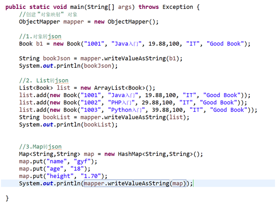

测试对象与json字符串的转换

|
Stringstr = "{\"id\":\"1001\",\"name\":\"Java入门\",\"price\":19.88,\"pnum\":100,\"category\":\"IT\",\"description\":\"Good Book\"}"; System.out.println(str);
//创建 "对象映射" 对象 ObjectMapper mapper = new ObjectMapper();
Book book = mapper.readValue(str, Book.class); System.out.println(book); |